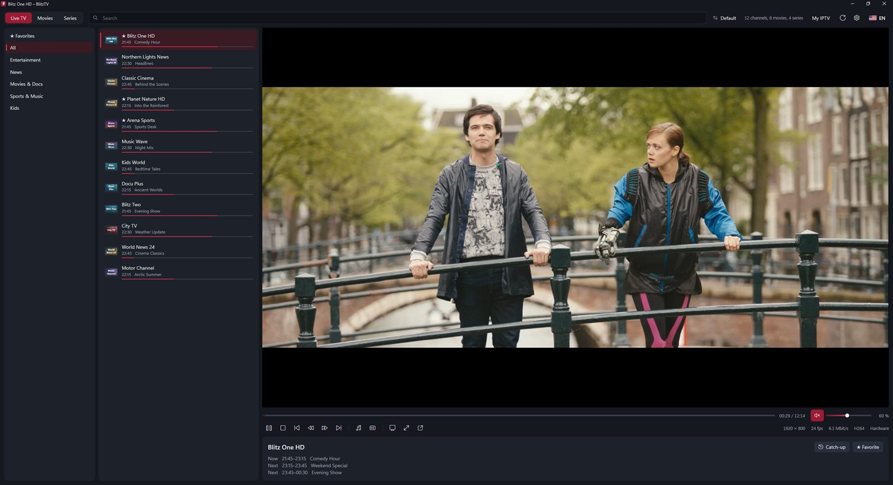
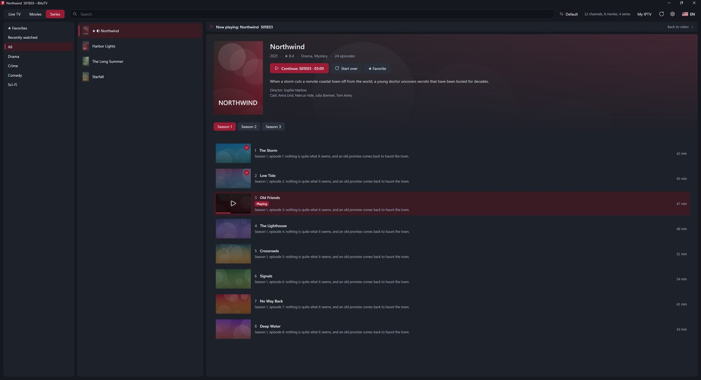
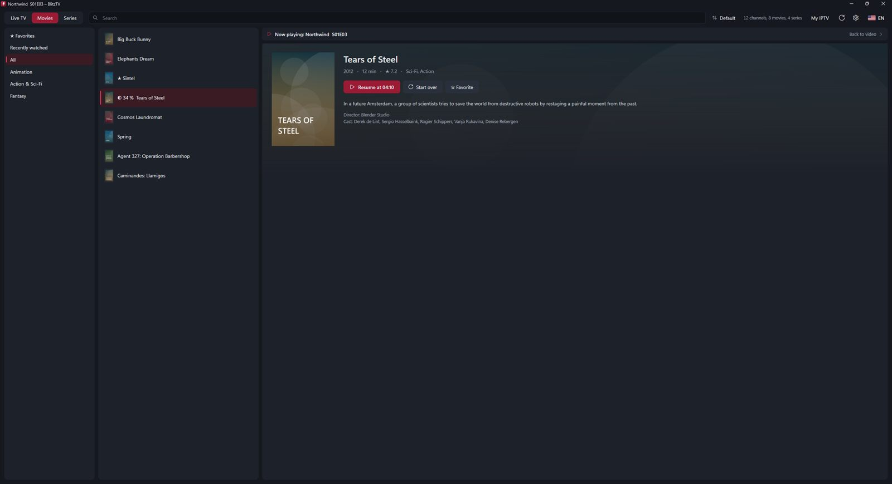
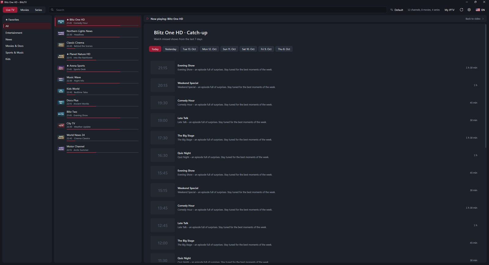
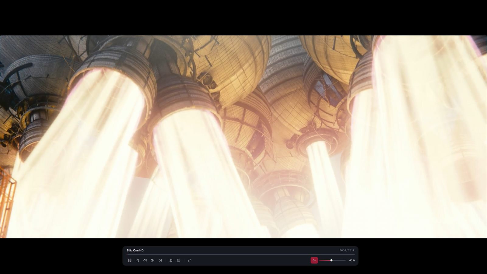

TV in diretta con guida, film e serie con ripresa – dalla tua playlist. Inserisci l'accesso Xtream Codes o il link M3U ed è fatta. Senza indirizzo MAC, senza caricare nulla su siti esterni, senza abbonamento.
Scarica da Microsoft Store
Leggero, veloce e chiaro – anche con decine di migliaia di canali e film.
Il programma in onda con barra di avanzamento direttamente nell'elenco, più quello che segue.
Pagina dei dettagli con copertina, trama e voto. Stagioni ed episodi chiari, riprendi da dove avevi lasciato.
Rivedi i programmi persi negli ultimi giorni – se il tuo provider lo supporta.
Video a schermo intero sul secondo monitor, elenchi sul primo. La condivisione su Discord mostra solo l'immagine, senza bande nere.
Riproduzione con accelerazione hardware, zapping rapido e riconnessione automatica in caso di interruzioni.
Scegli traccia audio e sottotitoli – BlitzTV ricorda la tua lingua per il film successivo.
Italiano, inglese, tedesco, francese, spagnolo, portoghese, turco, polacco, russo, arabo e altre.
I tuoi dati di accesso restano cifrati sul tuo PC. BlitzTV non raccoglie dati.
Niente indirizzi MAC da copiare, nessun sito per caricare la playlist.
Scarica BlitzTV da Microsoft Store – 7 giorni gratis, senza registrazione.
Server, nome utente e password del tuo provider – oppure incolla semplicemente il link M3U.
In pochi secondi vedi tutti i canali, i film e le serie. Basta un clic.
Scuro, sobrio e concentrato sull'essenziale.




Non trovi la tua domanda? Scrivici: beinke3@gmail.com
No. BlitzTV è solo un lettore e non contiene contenuti. Ti serve una playlist di un provider IPTV. Usa solo playlist che hai il diritto di usare.
Accessi Xtream Codes (server, nome utente, password) e playlist M3U come link o file. Un link M3U Xtream viene configurato automaticamente come accesso Xtream – con guida, serie e catch-up.
Puoi provare BlitzTV gratis per 7 giorni con tutte le funzioni. Poi è un acquisto unico – nessun abbonamento, tutti gli aggiornamenti futuri inclusi.
Sì. Aggiungi tutte le playlist che vuoi e passa dall'una all'altra in qualsiasi momento. Preferiti e avanzamento vengono salvati per playlist.
Una versione per Xbox è in lavorazione. L'idea: acquisti una volta e lo usi su PC e Xbox.
Un PC con Windows 10 o Windows 11 (64 bit) e una connessione Internet. Per il 4K è consigliata una connessione veloce.